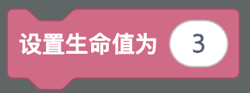
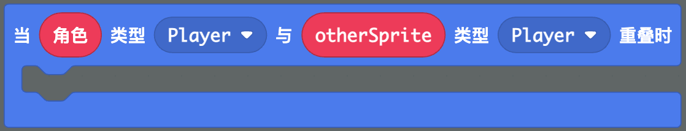
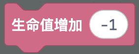
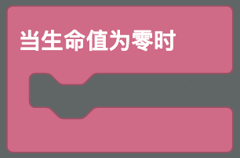
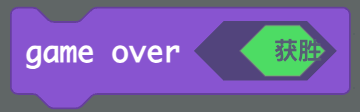
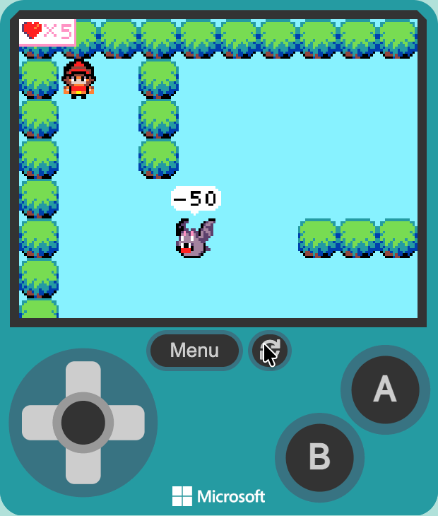

给玩家加上生命值，受伤扣血，生命归零游戏结束
两种方式二选一：
功能03-敌人巡逻）给玩家设置初始生命值，并在屏幕上显示出来。
游戏信息 → 生命值 → 将生命设置为 [3] 到 当开机时
💡 将生命设置为 是游戏自带的生命系统，设置后屏幕右上角会自动显示心形和数字，不用自己画。
当玩家和敌人重叠时，玩家生命减少。
精灵 → 重叠 → 当 [Player] 与 [Enemy] 重叠时 到代码区游戏信息 → 生命值 → 改变生命 [-1]

🤔 想一想：撞上敌人后，生命会不会连续往下掉？为什么会这样？我们到步骤 5 再解决这个问题。
当生命值降到 0 时，显示游戏结束画面。
游戏信息 → 生命值 → 当生命值为 0 时 事件到代码区游戏 → game over [失败]（这个指令还是英文的，意思是"游戏结束"）

💡 当生命值为 0 时 会在生命降到 0 时自动触发，不用自己写判断。game over（游戏结束）会停止游戏并显示胜利或失败画面。
受伤时让屏幕抖动一下，让玩家明显感觉到"被打了"。
当 [Player] 与 [Enemy] 重叠时 事件里，扣血之后放入 场景 → 镜头 → 镜头抖动 [4] 像素持续 [500] 毫秒扣血后暂停一小会儿，让生命不要连续往下掉。
当 [Player] 与 [Enemy] 重叠时 事件里，扣血之后放入 循环 → 暂停 [800] 毫秒💡 暂停 会停住当前这一小段代码，等时间到了再继续。800 毫秒是老师测试过的值，觉得太久或太短，可以自己改数字再试试。
反复测试，确保生命系统正常工作。

| 参数 | 作用 | 建议 |
|---|---|---|
| 初始生命 | 玩家能承受的攻击次数 | 初学者建议 3 |
| 每次扣血 | 每次受伤减少的生命 | 建议 1 |
| 抖动幅度和时长 | 受伤反馈的明显程度 | 4 像素、500 毫秒 |
| 暂停时长 | 两次扣血之间的间隔 | 800 毫秒，可自己微调 |
当生命值为 0 时 事件game over 是否放进了这个事件里游戏信息 → 生命值 → 将生命设置为 积木